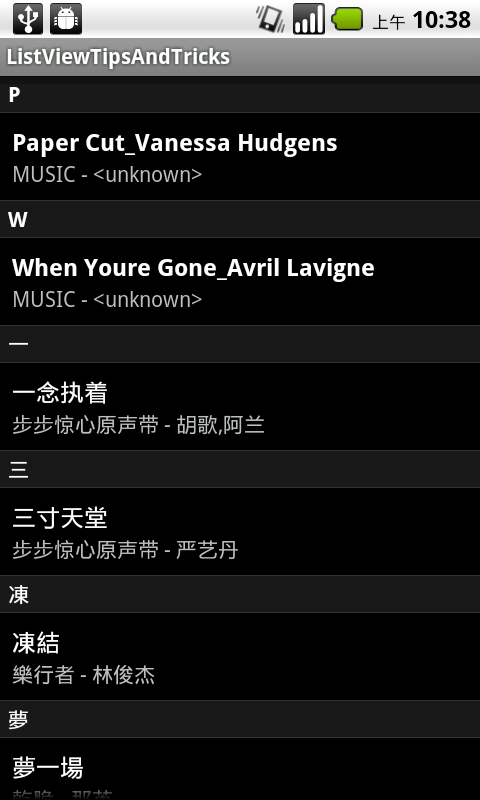

分组ListView使用技巧
前言：
ListView通常显示比较大的数据量.例如，“通讯录”应用程序使用的ListView包含所有您的联系人。在此中Activity中每个联系人代表一个单一的item view。这种模式是很方便，因为在同一时间它显示在屏幕上的几次接触。换句话说，它为用户提供大型概述了他/她的联系人。但是，使用一个ListView 部件是远远不够的。
如果让你开发了一个随机顺序显示所有联系人的通讯列表；解决的办法是理解和正常秩序中的所有联系人进行排序：按字母顺序排列。在另外的顺序，它通常是一个很好的做法，第几组数据。在“通讯录”应用程序实例，它归结为每个英文字母部分。
方法1：使用不同类型的视图ListView和更具体的adapter可以处理几种类型view。如果查询适配器接口，你会发现它包含两个具体方法：
getViewTypeCount()返回类型view AdapterView管理。大部分时间此方法返回1，因为所有项目的ListView类似。在这种情况下，返回2，ListView的将处理两种类型的view：经常项目视图和属于分隔查看。
getItemViewType(INT)必须返回0(含)之间的一个整数getViewTypeCount()(inclusive)。给定的数字表示该类型的视图，在给定的位置。例如，我们可以确保返回的值是经常项目的小号0 和1的分隔符。
优势
1、让你管理itmes的几种类型。
2、很容易理解。
缺点
几乎没有大量代码。
在一个特定的位置获得该item可能有困难。比方说，我们有[S1，C1，C2，S2，C3，C4，C5] SN是N次的分离器和CN N次接触。第五次接触实际存储在我们的数据数组的第7次。这意味着你不能访问，不知道多少部分数据包含在N的前面接触到您的阵列中的N次接触。
方法2：利用GONE Visibility另一种方式的ListView sectioning 是使用的视图类的visibility属性。Android是能够动态测量和布局item view。在ListView的渲染系统，这两次传球被执行，只有当一个视图需要显示。换句话说，默认情况下， 一个ListView item view高度是可变的。巧妙设置分隔符的visiable。该算法是相当简单的，分隔符必须是View.VISIBLE时，该项目是第一个适配器或如果当前项目是在一个比前一个不同的组。如果没有这些条件进行了验证，我们将设置View.GONE的分隔。图形下面总结的伎俩：
缺点
使用更多的内存。
优势
很容易将Sectioning 进行的“即时”.
简单分隔点击和执行的操作类似“下一步”。
GetItem(int)始终返回在您的数据基础结构中的第n个位置的item。此方法过程中，是基于cursor的适配器。这是根据查询ContentProvider时发生的。
例子：
NotifyingAsyncQueryListener：这个类可以帮助我们以异步方式查询ContentProvider。这是一个很好的方式在运行时以异步方式与ContentProvider，它可以防止在查询中从而阻止UI或者ANR弹出...在下面的例子中，我创建了一个定制的监听器的基础上提供的API，AsyncQueryHandler。这个类是因为API级别1。如果你是Android更高的版本，你一定要仔细看看CursorLoader类。
ViewHolder：这种设计模式省去了经常性的调用findViewById(int)的使用，每次getView / BindView的执行。它由引用 child View一次存储的标签(setTag(对象))查看和使用那些在重新引用的getView /BindView的方法代码。
itemview状态缓存：在以前的item，如果要显示需要检查分离器。一个简单的优化是缓存“分隔状态”每个item view。当然，我们需要彻底清除这个缓存(这里我们的基础数据的sursor)时被修改(changeCursor(光标))。
CharArrayBuffer：一般童鞋经常使用的getString()方法取出cursor里的数据。但是它意味着创建的String对象，一旦用户开始滚动列表这些对象可能被garbaged。为了防止重复创建对象，可以使用CharArrayBuffer包括从数据复制光标的原始字符数组，TextView将直接使用。而不必每次创建一个 String 对象，因此，我们将重用一个CharArrayBuffer。
下面的例子显示你如何实施分段ListView的第二种方法。查询系统的所有设备上的音频文件，并显示切片和按字母顺序排序的ListView，如下面的截图所示的例子包括：布局
首先，我们需要创建一个自定义的布局，将每个cell的布局。我们只是想显示歌名以及字幕。根据当前的分隔状态的状态我们还需要添加的查看,将gone/visiable；下面的布局很简单：
<?xml version="1.0" encoding="utf-8"?><LinearLayout xmlns:android="http://schemas.android.com/apk/res/android
android:layout_width="fill_parent
android:layout_height="wrap_content
android:orientation="vertical
android:paddingBottom="8dp" >
<TextView
android:id="@+id/separator
style="?android:attr/listSeparatorTextViewStyle
android:layout_width="fill_parent
android:layout_height="wrap_content
android:textColor="@android:color/white" />
<TextView
android:id="@+id/title
android:layout_width="fill_parent
android:layout_height="wrap_content
android:paddingLeft="8dp
android:paddingRight="8dp
android:paddingTop="8dp
android:singleLine="true
android:textColor="?android:attr/textColorPrimary
android:textSize="16sp
android:textStyle="bold" />
<TextView
android:id="@+id/subtitle
android:layout_width="fill_parent
android:layout_height="wrap_content
android:paddingLeft="8dp
android:paddingRight="8dp
android:singleLine="true
android:textColor="?android:attr/textColorSecondary
android:textSize="14sp
android:textStyle="normal" />
</LinearLayout>
实际的代码现在我们可以直接深入到Java代码。可能有人会问：为什么我们不为屏幕上创建自定义布局。事实上我们并不需要创建一个自定义布局的ListView；而且ListActivity所提供的正是我们正在寻找一个完全类似的默认布局。我们会让ListActivity布局设置我们的屏幕上做工作。主要
import android.app.ListActivity;import android.content.Context;
import android.database.CharArrayBuffer;
import android.database.Cursor;
import android.os.Bundle;
import android.provider.MediaStore.Audio.Media;
import android.text.TextUtils;
import android.view.LayoutInflater;
import android.view.View;
import android.view.ViewGroup;
import android.widget.CursorAdapter;
import android.widget.ListView;
import android.widget.TextView;
import com.miss.sos.util.NotifyingAsyncQueryHandler;
import com.miss.sos.util.NotifyingAsyncQueryHandler.NotifyingAsyncQueryListener;
/**
* Shows a smart way of handling separators in {@link ListView}s. It also shows
* some ways to boost your {@link ListView}s using techniques like 'section
* caching', ViewHolder, CharArrayBuffer, etc.
*/
public class SectionedListActivity extends ListActivity implements
NotifyingAsyncQueryListener {
private AudioFilesAdapter mAdapter;
private NotifyingAsyncQueryHandler mQueryHandler;
@Override
public void onCreate(Bundle savedInstanceState) {
super.onCreate(savedInstanceState);
mAdapter = new AudioFilesAdapter(this, null);
setListAdapter(mAdapter);
// Starts querying the media provider. This is done asynchronously not
// to possibly block the UI or even worse fire an ANR...
mQueryHandler = new NotifyingAsyncQueryHandler(getContentResolver(),
this);
mQueryHandler.startQuery(Media.EXTERNAL_CONTENT_URI,
AudioFilesQuery.PROJECTION, AudioFilesQuery.SORT_ORDER);
}
@Override
protected void onDestroy() {
// Clear any strong reference to this Activity
mQueryHandler.clearQueryListener();
super.onDestroy();
}
@Override
public void onQueryComplete(int token, Object cookie, Cursor cursor) {
if (cursor != null) {
startManagingCursor(cursor);
}
mAdapter.changeCursor(cursor);
}
private static class AudioFilesViewHolder {
public TextView separator;
public TextView titleView;
public CharArrayBuffer titleBuffer = new CharArrayBuffer(128);
public TextView subtitleView;
public StringBuilder subtitleBuffer = new StringBuilder();
}
private static class AudioFilesAdapter extends CursorAdapter {
/**
* State of ListView item that has never been determined.
*/
private static final int STATE_UNKNOWN = 0;
/**
* State of a ListView item that is sectioned. A sectioned item must
* display the separator.
*/
private static final int STATE_SECTIONED_CELL = 1;
/**
* State of a ListView item that is not sectioned and therefore does not
* display the separator.
*/
private static final int STATE_REGULAR_CELL = 2;
private final CharArrayBuffer mBuffer = new CharArrayBuffer(128);
private int[] mCellStates;
public AudioFilesAdapter(Context context, Cursor cursor) {
super(context, cursor);
mCellStates = cursor == null ? null : new int[cursor.getCount()];
}
@Override
public void changeCursor(Cursor cursor) {
super.changeCursor(cursor);
mCellStates = cursor == null ? null : new int[cursor.getCount()];
}
@Override
public void bindView(View view, Context context, Cursor cursor) {
final AudioFilesViewHolder holder = (AudioFilesViewHolder) view.getTag();
/*
* Separator
*/
boolean needSeparator = false;
final int position = cursor.getPosition();
cursor.copyStringToBuffer(AudioFilesQuery.TITLE, holder.titleBuffer);
switch (mCellStates[position]) {
case STATE_SECTIONED_CELL:
needSeparator = true;
break;
case STATE_REGULAR_CELL:
needSeparator = false;
break;
case STATE_UNKNOWN:
default:
// A separator is needed if it's the first itemview of the
// ListView or if the group of the current cell is different
// from the previous itemview.
if (position == 0) {
needSeparator = true;
} else {
cursor.moveToPosition(position - 1);
cursor.copyStringToBuffer(AudioFilesQuery.TITLE, mBuffer);
if (mBuffer.sizeCopied > 0
&& holder.titleBuffer.sizeCopied > 0
&& mBuffer.data[0] != holder.titleBuffer.data[0]) {
needSeparator = true;
}
cursor.moveToPosition(position);
}
// Cache the result
mCellStates[position] = needSeparator ? STATE_SECTIONED_CELL : STATE_REGULAR_CELL;
break;
}
if (needSeparator) {
holder.separator.setText(holder.titleBuffer.data, 0, 1);
holder.separator.setVisibility(View.VISIBLE);
} else {
holder.separator.setVisibility(View.GONE);
}
/*
* Title
*/
holder.titleView.setText(holder.titleBuffer.data, 0,
holder.titleBuffer.sizeCopied);
/*
* Subtitle
*/
holder.subtitleBuffer.setLength(0);
final String album = cursor.getString(AudioFilesQuery.ALBUM);
if (!TextUtils.isEmpty(album)) {
holder.subtitleBuffer.append(album);
final String artist = cursor.getString(AudioFilesQuery.ARTIST);
if (!TextUtils.isEmpty(artist)) {
holder.subtitleBuffer.append(" - ");
holder.subtitleBuffer.append(artist);
}
}
if (TextUtils.isEmpty(holder.subtitleBuffer)) {
holder.subtitleView.setVisibility(View.GONE);
} else {
holder.subtitleView.setVisibility(View.VISIBLE);
holder.subtitleView.setText(holder.subtitleBuffer);
}
}
@Override
public View newView(Context context, Cursor cursor, ViewGroup parent) {
View v = LayoutInflater.from(context).inflate(
R.layout.audio_list_item, parent, false);
// The following code allows us to keep a reference on the child
// views of the item. It prevents us from calling findViewById at
// each getView/bindView and boosts the rendering code.
AudioFilesViewHolder holder = new AudioFilesViewHolder();
holder.separator = (TextView) v.findViewById(R.id.separator);
holder.titleView = (TextView) v.findViewById(R.id.title);
holder.subtitleView = (TextView) v.findViewById(R.id.subtitle);
v.setTag(holder);
return v;
}
}
/**
* Keep query data in one place
*/
private interface AudioFilesQuery {
String[] PROJECTION = { Media._ID, Media.TITLE, Media.ALBUM,
Media.ARTIST };
int TITLE = 1;
int ALBUM = 2;
int ARTIST = 3;
String SORT_ORDER = Media.TITLE + " ASC";
}
}
好了，希望大家happy Coding.!! 效果图：
